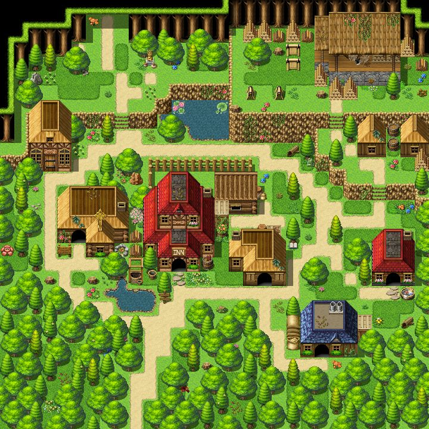

Role-playing games (RPGs) are a genre of video games where players take on the roles of fictional
characters and embark on adventures within immersive worlds. These games often feature complex
storylines, character development, and decision-making, allowing players to shape the narrative
through their choices. RPGs can be single-player experiences, like The Elder Scrolls V: Skyrim,
or multiplayer games, such as World of Warcraft. The genre emphasizes exploration, combat, and
quest-solving, with players typically leveling up their characters and acquiring new abilities or
equipment as they progress. RPGs have become one of the most beloved and influential genres in gaming.
FPS Games
First-person shooter (FPS) games are a genre where players experience gameplay from the perspective
of the protagonist, typically aiming and shooting with firearms or other weapons. FPS games focus on
fast-paced action, reflexes, and strategic combat, often involving team-based objectives or solo missions.
Popular titles like Doom, Call of Duty, and Halo have become icons of the genre, offering both single-player
campaigns and multiplayer modes. FPS games emphasize precision, fast reflexes, and coordination, making them
a staple in competitive gaming and esports. Over time, they've become a central part of gaming culture,
influencing both game design and the wider media landscape